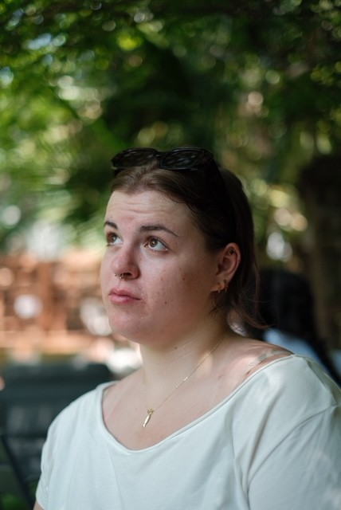

Sydney Wentz
Writer of fiction, poetry, and essays.
I write across forms because no single form has ever been wide enough to hold what I'm trying to say. A story needs room to breathe; a poem needs room to compress; an essay needs room to wander and then, finally, arrive somewhere unexpected.
My work tends to return to the same few questions: what we inherit from the people who raised us, what we carry without knowing it, and what it means to make a home inside language when other kinds of home have failed us.
I grew up between two small towns, read my way out, and have been writing ever since. My fiction has appeared in The Sun, Ploughshares, and several anthologies. My poetry has been shortlisted for the Rattle Prize. My essays have found homes in places I still can't quite believe.
I live with a great deal of books, a deeply unreliable houseplant, and someone who makes very good coffee at exactly the right moment.